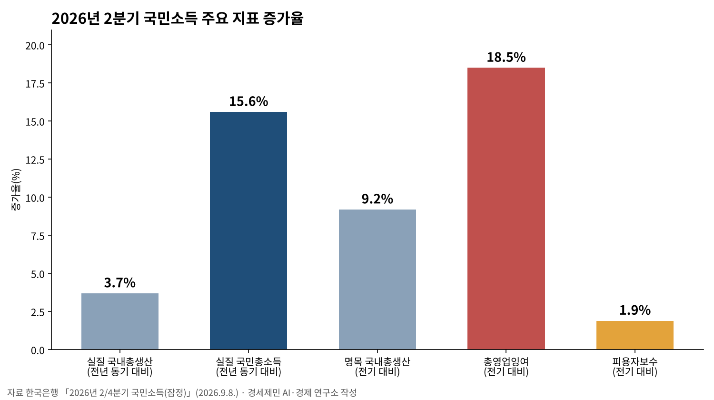
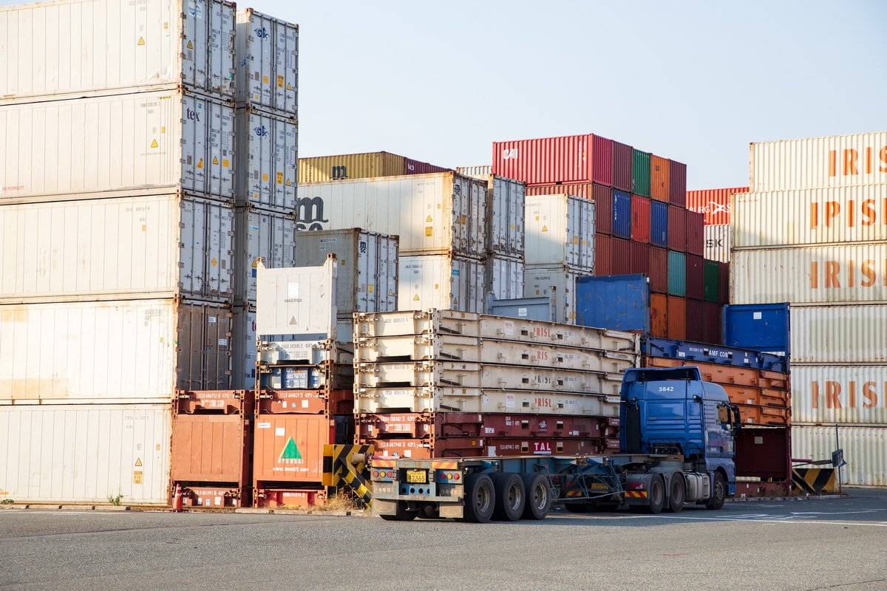
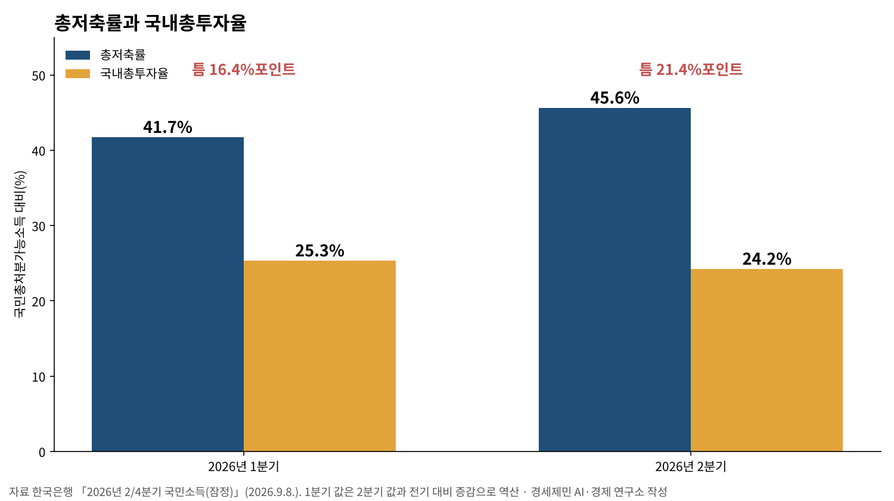

[거시경제] 이윤은 18.5% 늘고 임금은 1.9% 늘었다
2분기 실질 국민총소득 15.6% 증가, 실질 성장률 3.7%의 네 배 넘어
총저축률 45.6%로 역대 최고, 국내총투자율은 24.2%로 내려
국제통화기금, 올해 한국 성장률 3.3%로 0.7%포인트 올려
국제통화기금이 올해 한국 성장률 전망을 3.3%로 올렸다. 9월 수출은 1211억 달러로 한 달 기준 역대 최대다. 2분기 실질 국민총소득은 1년 전보다 15.6% 늘어 1988년 4분기 뒤 가장 크게 늘었다.
그런데 같은 2분기에 기업의 영업잉여가 석 달 새 18.5% 늘 때 일하는 사람이 받는 피용자보수는 1.9% 늘었다. 커진 나라 소득이 어디로 갔고 어디서 멈췄는지 한국은행과 정부 통계로 짚는다.

1. 나라 밖은 한국 성장률을 올렸다
국제통화기금은 10월 세계경제전망에서 올해 세계 성장률을 3.1%로 봤다. 7월보다 0.1%포인트 올린 값이다. 선진국은 0.4%포인트 올린 2.1%, 신흥·개발도상국은 0.1%포인트 내린 3.7%다.
한국은 3.3%로 7월 전망 2.6%에서 0.7%포인트 올랐다. 미국 2.3%와 선진국 평균 2.1%보다 높고 세계 평균 3.1%도 웃돈다.
재정경제부 자료는 한국의 상향 폭이 세계와 선진국 평균을 모두 넘은 까닭을 인공지능 하드웨어·반도체 수출 호조로 평가했다. 국제통화기금은 한국을 대만과 함께 인공지능 하드웨어 핵심 교역국으로 꼽았다.
수출 숫자가 이를 뒷받침한다. 산업통상부 잠정 집계로 9월 반도체 수출은 1년 전보다 263% 늘어 단일 품목으로 처음 600억 달러를 넘었다. 9월 수출의 절반에 이르는 크기다.
전망에는 전제가 하나 붙었다. 호르무즈 해협이 내년 3월 다시 열린다는 가정이다. 하방 위험으로는 중동 긴장과 무역 분절, 물가 압력, 인공지능 생산성 기대의 재평가를 들었다.
내년 세계 성장률은 3.4%로 7월 전망과 같다. 한국은 0.3%포인트 올린 2.8%이지만 올해 3.3%보다는 낮다. 올해의 높이가 내년에는 한풀 꺾인다는 그림이다.
국제통화기금은 각국에 재정 건전화와 물가 안정, 국제 협력을 주문했다. 재정경제부는 인공지능·반도체 수출 중심의 성장을 이어 가되 불평등과 민생 안정, 잠재성장률도 함께 챙기겠다고 밝혔다.
정부 판단도 같은 쪽이다. 재정경제부 「최근 경제동향」 10월호는 수출의 큰 폭 증가와 투자의 양호한 흐름, 완만한 소비 개선으로 경기 회복세가 이어진다고 적었다.
같은 자료는 고유가에 따른 물가 압력과 취약계층 고용 부담이 남는다고 함께 적었다. 이 글은 성장률 한 숫자 뒤에서 소득과 분배, 돈의 흐름, 그 흐름이 기댄 곳을 차례로 센다.
2. 무엇을 어떻게 셌나
자료는 한국은행 「2026년 2/4분기 국민소득(잠정)」과 「9월 수출입물가지수 및 무역지수(잠정)」가 중심이다. 관세청 9월 수출입 확정치, 국가데이터처 9월 고용동향, 기획예산처 「월간 재정동향」을 더했다.
수치는 기관 자료를 그대로 옮긴 KDI 경제교육·정보센터 전재본에서 읽었다. 전재본에 없는 값은 언론 둘 이상이 같은 값을 적었을 때만 썼다. 한 곳에만 나온 값은 모두 뺐고, 쓴 값은 전재본과 언론을 세 차례 맞대 확인했다.
실질 국민총소득은 국민이 번 소득의 실제 구매력이다. 국내총생산이 얼마나 만들었나를 센다면 국민총소득은 그 소득으로 얼마나 사들일 수 있나를 센다.
가공 지표는 넷이다. 첫째 소득·성장 격차는 실질 국민총소득 증가율에서 실질 국내총생산 증가율을 뺀 값이다. 교역조건이 나아져 같은 생산으로 더 많이 사들이게 된 몫이 여기에 담긴다.
둘째 이윤·임금 배수는 총영업잉여 증가율을 피용자보수 증가율로 나눈 값이다. 둘 다 명목, 전기 대비다. 1보다 크면 새로 생긴 소득이 임금보다 이윤 쪽으로 더 빨리 간다는 뜻이다.
셋째 저축·투자 틈은 총저축률에서 국내총투자율을 뺀 값이다. 나라 안에서 쓰이지 않고 남은 저축의 크기다. 국민소득 항등식에서 이 틈은 경상수지 흑자와 맞물려 움직인다. 두 비율은 모두 국민총처분가능소득에 견준 값이다.
넷째 수출 가격 몫은 수출 증가를 값과 양으로 나눈 지표다. 자연로그(1+수출물가 상승률)를 자연로그(1+수출물가 상승률)와 자연로그(1+수출물량 상승률)의 합으로 나눈다.
이 지표는 원화 기준 물가지수로 셌다. 그래서 1년 새 환율 변화가 섞인 근사치다. 가공 지표는 모두 발표된 값으로 셈만 했고 회귀나 계수 추정은 하지 않았다.
3. 성장보다 소득이, 임금보다 이윤이 컸다
2분기 실질 국내총생산은 1년 전보다 3.7% 늘었고 실질 국민총소득은 15.6% 늘었다. 소득·성장 격차는 11.9%포인트다. 소득이 생산보다 네 배 넘게 빨리 늘었다.
이 차이는 주로 교역조건에서 나왔다. 실질 무역손익은 1분기 38조7000억원에서 2분기 58조5000억원으로 19조8000억원 불었다. 한국은행은 교역조건 개선이 실질 국민총소득을 끌어올렸다고 설명했다.
물가로 보면 더 또렷하다. 국내총생산 디플레이터는 1년 전보다 21.9% 올랐다. 디플레이터는 나라 안에서 만든 재화와 서비스 전체의 평균 가격 수준이다. 수출품 값, 그 가운데 반도체 값이 오르며 이 평균을 끌어올렸다.
9월에도 같은 힘이 이어졌다. 원화 기준 수출물가는 1년 전보다 40.9%, 수출물량은 32.1% 올랐다. 수출 가격 몫은 55.2%다. 수출이 늘어난 몫의 절반 넘게가 비싸게 판 데서 나왔다.


늘어난 소득의 행선지는 분배 통계가 보여 준다. 2분기 총영업잉여는 석 달 새 18.5% 늘었고 피용자보수는 1.9% 늘었다. 이윤·임금 배수는 9.7이다.
피용자보수는 임금과 사회보험 부담금처럼 일한 대가로 받는 몫이다. 영업잉여는 부가가치에서 피용자보수와 생산 관련 세금 등을 빼고 남는 몫이다. 기업 이윤과 자영업 소득이 여기에 든다. 2분기에는 앞이 뒤보다 열 배 가까이 빠르게 불었다.
일자리 숫자도 같은 그림이다. 9월 취업자는 2926만6000명으로 1년 전보다 11만3000명(0.4%) 늘었다. 제조업 취업자는 1만6000명 늘어 27개월 만에 늘었다.
청년 고용률은 44.0%로 1.1%포인트 내려 29개월째 떨어졌다. 수출이 83.7% 늘어난 달에도 청년에게 열린 일자리 문은 넓어지지 않았다.
4. 번 돈이 나라 안에서 돌지 않는다
2분기 총저축률은 45.6%로 석 달 새 3.9%포인트 올라 1970년 통계 작성 뒤 가장 높다. 국내총투자율은 24.2%로 1.1%포인트 내렸다.
저축·투자 틈은 21.4%포인트로 1분기 16.4%포인트보다 5.0%포인트 넓어졌다. 번 돈 가운데 나라 안 투자로 돌지 않고 남은 몫이 한 분기 새 그만큼 커졌다.

나라 안 수요는 약하다. 8월 소매판매는 전월보다 1.8% 줄었고 설비투자는 9.5% 줄었다. 정부는 자동차 업체 여름휴가 같은 일시 요인을 들었다.
일시 요인을 빼더라도 저축은 늘고 투자는 줄어든 2분기 흐름과 방향이 같다. 9월 산업활동동향이 나와야 반등인지 아닌지 가릴 수 있다.
균형경제학으로 보면 문제는 수요 쪽이다. 수출로 번 돈이 임금으로 흘러 소비가 되고 이윤이 투자로 돌아 일자리가 될 때 성장은 고루 퍼진다. 2분기에는 두 고리가 모두 느슨했다.
선행연구도 같은 방향을 가리킨다. 주상영(2013)은 외환위기 뒤 노동소득분배율 하락이 소비와 투자를 함께 끌어내렸다고 분석했다. 분배가 나빠지면 내수가 약해진다는 결론이다.
노동 몫이 줄어드는 흐름은 한국만의 일도 아니다. 카라바부니스와 나이먼(2014)은 1980년대 초 뒤 세계 노동소득분배율이 대다수 나라와 산업에서 크게 내려갔다고 분석했다.
재정은 돈을 거둬들이는 쪽에 섰다. 8월 말까지 총수입은 529조7000억원으로 1년 전보다 98조원 늘었다. 총지출 증가는 39조3000억원으로 수입 증가의 40%에 그쳤다.
같은 때 관리재정수지는 43조원 적자이고 중앙정부 채무는 1372조1000억원이다. 늘어난 세수를 빚 갚는 데 쓸지, 약한 수요를 받치는 데 쓸지가 정책의 갈림길이다.
피케티는 『21세기 자본』에서 자본수익률이 경제성장률보다 높으면 부가 자본 쪽으로 쏠린다고 봤다. 한 분기 숫자로 추세를 말할 수는 없지만 다음 분기에도 세어야 할 차이다.
5. 물어야 할 것과 제언
첫째는 값에 기댄 호황이 얼마나 갈지다. 수출 증가의 절반 넘게가 가격에서 왔다. 반도체 값이 꺾이면 교역조건 이득도 줄어든다. 국제통화기금이 적은 인공지능 생산성 기대의 재평가가 그 길목이다.
둘째는 에너지다. 9월 수입물가는 국제유가 상승으로 1년 전보다 17.6% 올랐고 소비자물가는 2.9% 올랐다. 해협이 다시 열리기 전까지 화석연료 수입 비용은 가계 장바구니로 번질 수 있다.
에너지 전환이 늦을수록 이 비용은 커진다. 중동의 전쟁이 한국 가계의 물가로 바로 이어지는 구조 자체가 위험이다. 사회생태론으로 보면 화석연료 의존은 환경의 비용이자 가계의 비용이다.
셋째는 금리다. 기준금리는 7월과 8월 두 차례 올라 연 3.00%다. 한국은행 금융통화위원회는 10월 22일 다시 결정한다. 수요가 약한 때 금리가 더 오르면 소비와 투자는 한 번 더 눌린다.
넷째는 지역이다. 지리경제학의 물음이다. 수출 호황이 어느 지역의 공장과 일자리에 닿는지는 지역 통계로 따로 세어야 한다. 인천의 수출·고용 수치는 이 글을 쓰는 동안 기관 원문에서 확인하지 못했다.
인천의 몫은 12월 9번 대주제 「인천의 주요산업과 산업연관분석」에서 따로 센다. 이 호황이 인천의 공장과 상점가에 얼마나 닿는지가 그때의 물음이다.

경세제민 AI·경제 연구소는 셋을 제언한다. 정부는 교역조건 이득으로 늘어난 세수를 소득 하위 가계와 청년 일자리, 에너지 전환 투자에 어떻게 쓸지 밝혀야 한다.
기업은 쌓인 영업잉여를 국내 설비와 임금으로 얼마나 돌릴지 내놔야 한다. 한국은행은 분기 국민소득 발표 때 노동소득분배율을 함께 짚어 주기 바란다.
3분기 국민소득 속보와 9월 산업활동동향은 이 글 뒤에 나온다. 그 숫자로 2분기의 엇갈림이 흐름인지 한때인지 다시 센다. 다음 주 2번 대주제는 피용자보수 뒤에 있는 임금과 가계소득을 센다.
성장률 3.3%는 나라 전체의 평균이다. 2분기 한국 경제는 더 많이 벌었지만 그 돈은 이윤과 저축 쪽에 머물렀고 임금과 소비, 투자로는 덜 흘렀다. 수출 숫자가 클수록 그 돈이 일하는 사람의 소득과 동네 가게의 매출로 이어지는지를 함께 세야 성장이 경세제민이 된다.
참고문헌
- 주상영, 「노동소득분배율 변동이 내수에 미치는 영향」, 『경제발전연구』 제19권 제2호, 한국경제발전학회, 2013.12., 151~182쪽, https://scholar.kyobobook.co.kr/article/detail/4010023657420
- Karabarbounis, L. and B. Neiman, 「The Global Decline of the Labor Share」, 『Quarterly Journal of Economics』 129(1), Oxford University Press, 2014, 61~103쪽, https://doi.org/10.1093/qje/qjt032
- 토마 피케티, 『21세기 자본』, 장경덕 외 옮김, 이강국 감수, 글항아리, 2014.9.
- 한국은행 경제통계2국 국민소득총괄팀, "2026년 2/4분기 국민소득(잠정)", 2026.9.8., KDI 경제교육·정보센터 게재, https://eiec.kdi.re.kr/policy/materialView.do?num=286470
- 한국은행 경제통계1국 물가통계팀, "2026년 9월 수출입물가지수 및 무역지수(잠정)", 2026.10.16., KDI 경제교육·정보센터 게재, https://eiec.kdi.re.kr/policy/materialView.do?num=288195
- 한국은행 금융통화위원회실, "2026년도 제16차 금융통화위원회(정기) 의사록", 2026.8.27. 회의, KDI 경제교육·정보센터 게재, https://eiec.kdi.re.kr/policy/materialView.do?num=286868
- 한국은행 통화정책국 정책총괄팀, "통화정책방향: 기준금리 2.75%로 상향 조정", 2026.7.16., KDI 경제교육·정보센터 게재, https://eiec.kdi.re.kr/policy/materialView.do?num=284308
- 재정경제부 국제금융국 국제통화팀, "국제통화기금(IMF) 10월 세계경제전망", 2026.10.13., KDI 경제교육·정보센터 게재, https://eiec.kdi.re.kr/policy/materialView.do?num=288022
- 재정경제부 경제정책국 경제분석과, "최근 경제동향(2026년 10월호)", 2026.10.16., KDI 경제교육·정보센터 게재, https://eiec.kdi.re.kr/policy/materialView.do?num=288176
- 재정경제부, "2026년 8월 산업활동 동향", 2026.9.30., KDI 경제교육·정보센터 게재, https://eiec.kdi.re.kr/policy/materialView.do?num=287579
- 관세청, "2026년 9월 월간 수출입 현황(확정치)", 2026.10.15., KDI 경제교육·정보센터 게재, https://eiec.kdi.re.kr/policy/materialView.do?num=288151
- 산업통상부 무역투자실 수출입과, "2026년 9월 수출입 동향", 2026.10.1., KDI 경제교육·정보센터 게재, https://eiec.kdi.re.kr/policy/materialView.do?num=287666
- 국가데이터처, "2026년 9월 고용동향", 2026.10.16., KDI 경제교육·정보센터 게재, https://eiec.kdi.re.kr/policy/materialView.do?num=288191
- 기획예산처 재정혁신정책관 지속가능재정과, "월간 재정동향 2026년 10월호", 2026.10.15., KDI 경제교육·정보센터 게재, https://eiec.kdi.re.kr/policy/materialView.do?num=288153
- 김진환, "재정경제부, 2026년 국제통화기금(IMF) 10월 세계경제전망(WEO)", 뉴스서울, 2026.10.13., https://newsseoul.co.kr/news/view/1065590417626973
- 유지승, "IMF, 올해 韓 성장률 3.3%로 상향...\"AI 하드웨어 핵심국\"", 머니투데이방송, 2026.10.13., https://news.mtn.co.kr/news-detail/2026101313132346029
- 박미라, "반도체 호황에 2분기 성장률 0.6%…국민소득은 3.1% 뛰었다", 머니투데이방송, 2026.9.8., https://news.mtn.co.kr/news-detail/2026090807484339906
- 이성준, "대한민국 47년 만에 대기록 썼다… 어떻게 가능했나", 리포테라, 2026.9.8., https://www.reportera.co.kr/news/korea-q2-nominal-gdp-surge-record-savings-rate/
- 조희준, "2분기 성장률 0.6%…국민소득 4만 달러 돌파 하려나", 위키트리, 2026.9.8., https://www.wikitree.co.kr/articles/1157991
- 조희준, "소비·생산·투자 마이너스…홀로 매출 성장한 '이곳'", 위키트리, 2026.9.30., https://www.wikitree.co.kr/articles/1162909
- 김준혁, "제조업 고용 27개월만 증가 전환…청년 취업 47개월 연속 감소", 파이낸셜뉴스, 2026.10.16., https://www.fnnews.com/news/202610160840205713
- 연합뉴스, "IMF raises S. Korea's growth forecast to 3.3% amid chip supercycle", 코리아헤럴드 게재, 2026.10.13., https://www.koreaherald.com/article/10900802
- 노경민, "S. Korea's nominal GDP growth tops 26%, highest in 47 years", 코리아헤럴드, 2026.9.8., https://www.koreaherald.com/article/10866539
- 김연재, "Oil surge lifts Korea's import prices despite stronger won", 아주프레스, 2026.10.16., https://www.ajupress.com/view/20261016074357716
- 석대건, "South Korea semiconductor exports top $60 billion for first time in September, total exports up 84%", 디지털투데이, 2026.10.1., https://www.digitaltoday.co.kr/en/view/110005/south-korea-semiconductor-exports-top-60-billion-dollars-for-first-time-in-september-total-exports-up-84-percent
- 장재진, "8월까지 나라살림 적자 43조로↓… 세수 호황에 8년 만에 최소", 한국일보, 2026.10.15., https://www.hankookilbo.com/news/article/A2026101509550003317
- 김현동, "재경부 '견조한 경기회복' 유지…소비 판단은 한 발 물러나", 아이뉴스24, 2026.10.16., https://www.inews24.com/view/2015750
사진 출처
- [사진1] Kaflan, "Bank of Korea 20070103.jpg", 위키미디어 공용, 퍼블릭 도메인, 2007.1.3. 촬영, https://commons.wikimedia.org/wiki/File:Bank_of_Korea_20070103.jpg
- [사진2] 부산항만공사·한국문화정보원, "부산항 신항 1부두 컨테이너화물 및 하역장비", 2018년 촬영, 공공누리 제1유형, https://www.kogl.or.kr/recommend/recommendDivView.do?recommendIdx=4330&division=img
- [사진3] 인천 중구청, "전망대 경치", 공공누리 제1유형, 위키미디어 공용 File:전망대 경치.jpg
- [도표1] 경세제민 AI·경제 연구소 작성, 자료 한국은행 「2026년 2/4분기 국민소득(잠정)」(2026.9.8.)
- [도표2] 경세제민 AI·경제 연구소 작성, 자료 한국은행 「2026년 2/4분기 국민소득(잠정)」(2026.9.8.)
※ 이 브리핑은 AI 프로그램 클로드를 활용해 작성했습니다.
관련기사
- [가계부채 브리핑] 가계대출 9개월 만에 2조2000억원 감소, 주택담보대출은 3조3000억원 늘어
- 수출 1209억달러 역대 최대, 제조업 고용보험 가입자는 외국인 빼면 4000명 줄어
- 인천 신설구 100일, 법은 「지원하며」라 썼는데 개편 국비 예산은 두 해째 0원
- 인천시와 군·구는 무엇을 연구에 맡기나, 정책연구 727건을 다 세어 봤다
저작권자 © AI경세제민 무단전재 및 재배포, AI학습 및 활용 금지